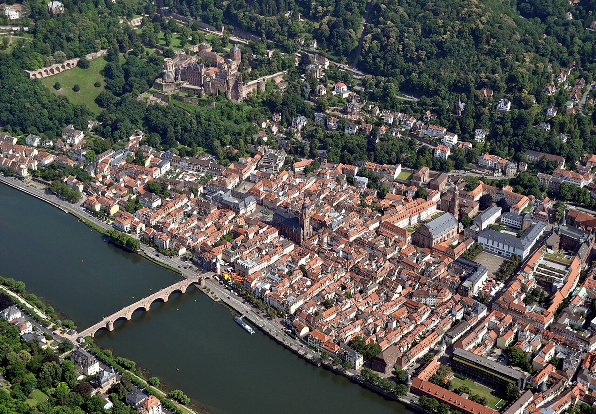

探索海德堡老城：德国浪漫之城的魅力

海德堡老城（Heidelberg Altstadt）位于德国巴登-符腾堡州，是欧洲最具浪漫色彩的历史名城之一。这座城市以其悠久的历史、美丽的建筑和迷人的氛围吸引着来自世界各地的游客。无论是漫步在老城的石板路上，还是俯瞰内卡河的壮丽景色，海德堡都会让你流连忘返。
如何到达海德堡老城
海德堡交通便利，从德国主要城市如法兰克福、斯图加特和慕尼黑都可以轻松到达。乘坐火车是最常见的方式，海德堡主火车站（Hauptbahnhof）距离老城仅约2公里，可以步行或乘坐公共交通工具前往。如果自驾，老城周边有许多停车场，但需要注意部分区域是行人专用区。
最佳旅行时间
海德堡四季皆美，但春季和秋季是最适合旅行的季节。春季时，老城的花园和公园生机勃勃；秋季则被金黄的树叶点缀，格外浪漫。夏季是旅游旺季，游客较多，但此时也是享受户外活动和节日庆典的好时机。冬季虽然寒冷，但圣诞市场和老城的灯光为这座城市增添了一份温馨的氛围。
海德堡老城的亮点
1. 海德堡城堡
海德堡城堡（Heidelberg Schloss）是这座城市的标志性建筑，位于山上，俯瞰整个老城和内卡河。这座文艺复兴风格的城堡虽然部分损毁，但仍保留了其宏伟的气势。你可以参观城堡内部的历史展览，或者在城堡花园中享受宁静的时光。
2. 哲学家小径
哲学家小径（Philosophenweg）是海德堡最著名的徒步路线之一，位于内卡河对岸的山坡上。这条小径以其美丽的景色和宁静的氛围而闻名是哲学家和诗人寻找灵感的地方。从这里眺望海德堡老城和城堡，景色令人叹为观止。
3. 老桥
海德堡老桥（Alte Brücke）是一座横跨内卡河的历史桥梁，连接老城和哲学家小径。桥上有一座猴子雕塑，据说触摸它会带来好运。老桥是欣赏河景和拍照的绝佳地点。
4. 主街
海德堡的主街（Hauptstraße）是欧洲最长的步行街之一，两旁遍布着商店、咖啡馆和历史建筑。漫步在主街上，你可以感受到这座城市的历史与现代的完美融合。
品尝海德堡的美食
海德堡的美食深受德国传统菜肴的影响，同时也有许多国际化的选择。来到海德堡，一定要尝试当地的香肠和啤酒。此外，海德堡的咖啡馆和面包店也值得一试，尤其是搭配一杯咖啡，享受悠闲的下午时光。
如果你喜欢尝试新口味，海德堡的国际化餐厅提供了来自世界各地的美食，从意大利披萨到亚洲料理应有尽有。
结语
海德堡老城是一座充满历史与浪漫气息的城市，无论你是历史爱好者、自然爱好者还是美食爱好者，这里都能满足你的需求。希望这篇指南能帮助你更好地规划你的海德堡之旅，享受这座城市的独特魅力。
Haiktec
Text mit KI erstellt und automatisch geprueft.